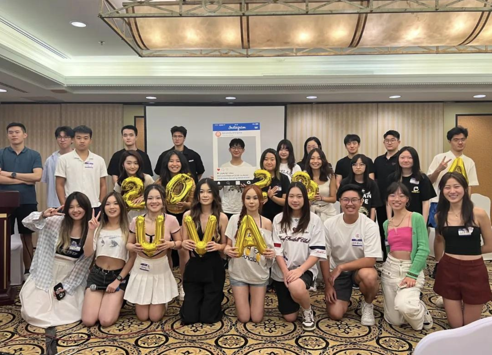

← Case Studies
Case Study 08
CSSS
Activities Dept. Member → Dept. Head → Internal Vice President · CSSS, University of Virginia · Aug 2022 – May 2024
Three years, one org — dept member to Internal Vice President.
6 major events a year · 200+ attendees each · Aug 2022 – May 2024
Context
- Three-year arc: activities department member (year 1) → department head (year 2) → Internal Vice President (year 3)
- Kept the VP role even after transferring to UChicago — flew back for every major event rather than stepping down
- As Internal Vice President: ran internal operations across HR, project, and event management, as well as WeChat Official Account operations — coordinating across five departments and 50 members
- Ran 6 major events a year, 200+ attendees each, owning venue, staffing, procurement, logistics, and visual direction end to end
- Flagship events across the three years: a welcome mixer, a talent-show-style program, a Spring Festival Gala, and a Mid-Autumn garden party
